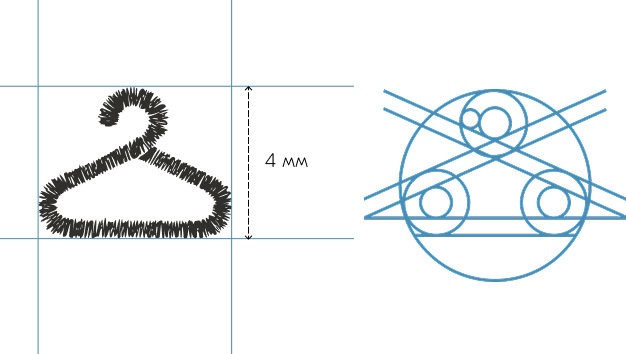
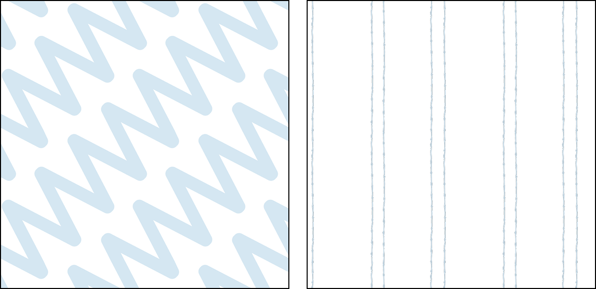
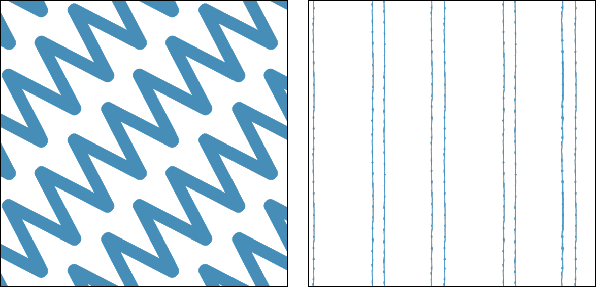
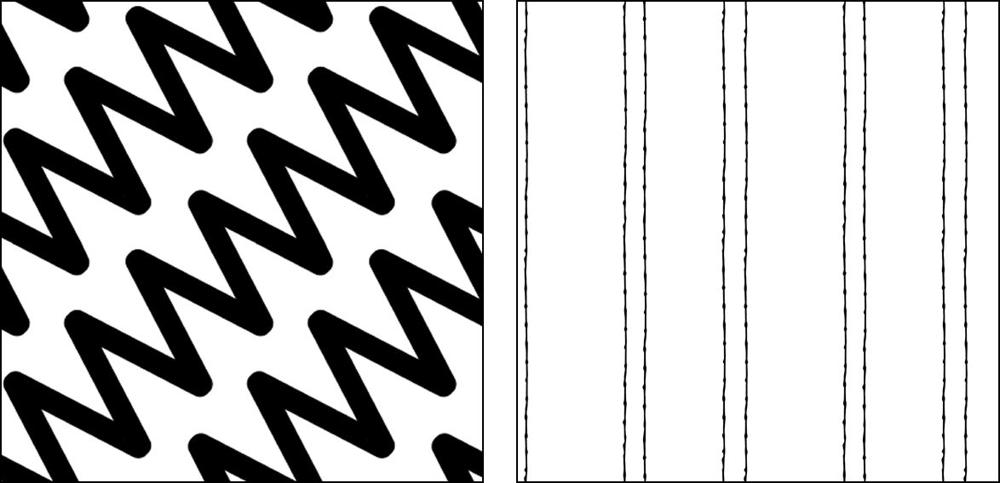
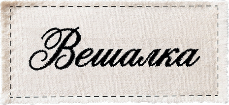

Графика,
паттерны
Графическая система «Вешалки» продолжает основную идею бренда – тему вышивки, строчки и ручной работы.
Все элементы построены так, чтобы сохранять ощущение тактильности и живой фактуры. В графике остаётся лёгкая неровность и ощущение физического процесса, благодаря чему визуальный стиль выглядит менее стерильным и более тёплым.
Графические элементы используются в социальных сетях, digital-носителях, фирменных макетах и дополнительных коммуникационных материалах.
Фирменная вешалка
Её форма была построена на основе окружностей, что позволило добиться плавной и сбалансированной конструкции.
Фирменная вешалка используется в графических композициях, на носителях, в постах и сторис, в паттернах, как дополнительный фирменный маркер.

Строчки
Элементы создавались вручную на швейной машинке, после чего переводились в цифровой векторный формат.
Элементы используются:
- для оформления карточек;
- выделения изображений;
- оформления цитат и текстовых блоков;
- в публикациях социальных сетей;
- в digital-макетах.
Паттерны



Паттерны построены на основе фирменной графики. Первый паттерн имитирует машинную строчку «зигзаг». Второй построен на основе тонкой строчки.
Элементы могут использоваться как самостоятельный фон или как дополнительный декоративный слой.
Нашивка
Нашивка визуально отсылает к текстильным биркам и элементам одежды, поддерживая тему ткани, швейного процесса и материальности бренда.
Она используется:
- как декоративный элемент;
- как визуальный акцент;
- в качестве водяного знака в публикациях;
- в постах и сторис;
- в mockup-материалах и носителях.
